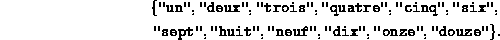
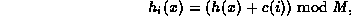

Data Structures and Algorithms
with Object-Oriented Design Patterns in Java
Data Structures and Algorithms
with Object-Oriented Design Patterns in Java
 for the strings "ece.uw.ca" and "cs.uw.ca".
Hint: Refer to Appendix .
for the strings "ece.uw.ca" and "cs.uw.ca".
Hint: Refer to Appendix .LDL DLD
where L is always a letter (A-Z),
D is always a digit (0-9),
and is always a single space.
For example, the postal code for the
University of Waterloo is N2L 3G1.
Devise a suitable hash function for Canadian postal codes.
in the order given into a table of size M=16 that is initially empty. Use the following table of hash values:
| x | Hash(x) (octal) |
| "un" | 016456 |
| "deux" | 0145446470 |
| "trois" | 016563565063 |
| "quatre" | 010440656345 |
| "cinq" | 0142505761 |
| "six" | 01625070 |
| "sept" | 0162446164 |
| "huit" | 0151645064 |
| "neuf" | 0157446446 |
| "dix" | 01455070 |
| "onze" | 0156577345 |
| "douze" | 014556647345 |
as the secondary hash function).
,
show the result when the key "deux" is withdrawn.
derive an expression for the total memory space used
to represent a table of size M that contains n items..
).
Rather than use an array of linked lists,
suppose we implement a hash table
with an array of binary search trees.
).
Consider a scatter table with open addressing.
Devise a probe sequence of the form

where c(i) is a full-period pseudo random number generator. Why is such a sequence likely to be better than either linear probing or quadratic probing?
 Copyright © 1998 by Bruno R. Preiss, P.Eng. All rights reserved.
Copyright © 1998 by Bruno R. Preiss, P.Eng. All rights reserved.